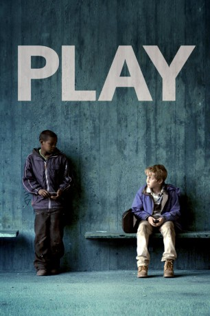

#8957 Play
 
 IMDB-Wertung: 7.1 / 10
IMDB-Wertung: 7.1 / 10  Metascore: 0
Metascore: 0 
Ruben Östlund entwirft in seinem vielfach ausgezeichneten Spielfilm (2011) eine ebenso klar strukturierte wie spannende Studie menschlicher Verhaltensmuster. Basierend auf einem realen Fall, der sich in Göteborg ereignete, und inspiriert durch die Erkenntnisse der experimentellen Sozialpsychologie, hat der schwedische Autor und Regisseur einen außergewöhnlichen Film konzipiert.
Jahr: 2011
Dauer: 111 Minuten
FSK:
Land: Schweden Studio: Fugu-FilmverleihTonspuren:
Untertitel:
Auflösung: 720p (1280x720) Größe: 2590 MB
Genre: Drama
Regisseur: Ruben Östlund
Drehbuch: Erik Hemmendorff
Soundtrack: Danny Bensi, Saunder Jurriaans
Darsteller:
- Anas Abdirahman als Anas
- Sebastian Blyckert als Sebastian
- Yannick Diakité als Yannick
- Sebastian Hegmar als Alex
- Abdiaziz Hilowle als Abdi
- Nana Manu als Nana
- John Ortiz als John
- Kevin Vaz als Kevin
- Jacob Ottander als Pojke i köpcenter
- Herman Troeng als Pojke i köpcenter
- Tobias Åkesson als Tågvärd
- Peggy Johansson als Tågvärd
- Humberto Guandinango Espinosa als Panflöjtsbandet
- Luis Alonso Tuquerez als Panflöjtsbandet
- José Jaime als Panflöjtsbandet
- Patricio Cotacachi als Panflöjtsbandet
- Rodrigo Cotacachi als Panflöjtsbandet
- Alfredo Cahuasqui als Panflöjtsbandet
- Luis Espinosa als Panflöjtsbandet
- Lisbeth Caspersson als Caféägare
- Caroline Kruse als Cafébiträde
- Tabita Fellert als Cafébiträde
- Adam Nygren als Reggaekille på spårvagn
- Josefine Adolfsson als Skrikande tjej
- Almir Karajkovic als Äldre kille
- Kawa Mohammadi als Äldre kille
- Kawan Mohammadi als Äldre kille
- Roland Persson als Vittne
- Jörgen Larsson als Spårvagnskontrollant
- Ulla-Britt Ekblad als Spårvagnskontrollant
- Martin Bröns als Clownen Pibo
- Hani Saad M. als Lillebror
- Abdirahman A. Jame als Farbror
- Samira Omar als Farbroderns hustru
- Anna Troeng als Mamma på spårvagn
- Johan Jonason als Arg pappa #1
- Martin McFaul als Arg pappa #2
- Johan Nordström als Son
- William Berglind Mäkinen als Son
- Lina Räftegård als Gravid kvinna
- Kia Skog als Kvinna med matkassar
- Kornelia Wiklund als Dansande flicka
- Nick Holmquist als Butiksbiträde (uncredited)
Datei: X:\2011(N-Z)\Play (2011, FSK, 1280x720).mkv seit 16.05.2018
Festplatte: HD 2011(G-Z)
 Es gibt insgesamt 132 Filme in der Gruppe '2011(N-Z)'
Es gibt insgesamt 132 Filme in der Gruppe '2011(N-Z)'